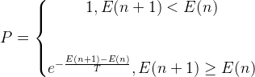
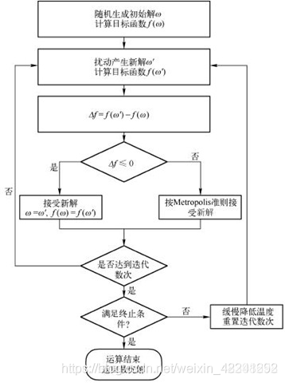
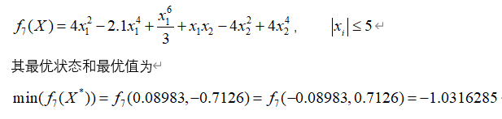
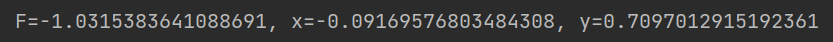
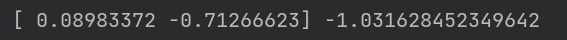
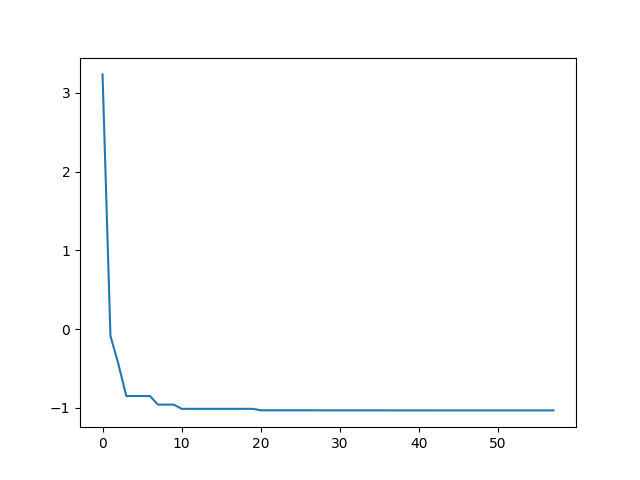
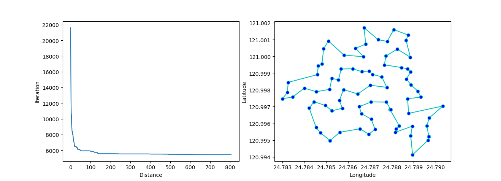

原理讲解：
假设前一个状态为x(n),系统根据某一指标（梯度下降，上节的能量），状态变为x(n+1),相应的，系统的能量由E(n)变为E(n+1),定义系统由x(n)变为x(n+1)的接受概率P为：

从上式我们可以看到，如果能量减小了，那么这种转移就被接受（概率为1），如果能量增大了，就说明系统偏离全局最优值位置更远了，此时算法不会立刻将其抛弃，而是进行概率操作：首先在区间【0,1】产生一个均匀分布的随机数ϵ，如果ϵ<P，则此种转移接受，否则拒绝转移，进入下一步，往复循环。其中P以能量的变化量和T进行决定概率P的大小，所以这个值是动态的。
用固体退火模拟组合优化问题，将内能E模拟为目标函数值f，温度T演化成控制参数t，即得到解组合优化问题的模拟退火算法：由初始解i和控制参数初值t开始，对当前解重复“产生新解→计算目标函数差→接受或舍弃”的迭代，并逐步衰减t值，算法终止时的当前解即为所得近似最优解，退火过程由冷却进度表(Cooling Schedule)控制，包括控制参数的初值t及其衰减因子Δt、每个t值时的迭代次数L和停止条件Tf。而温度的作用就是来计算转移概率P的。当温度每次下降后，转移概率也发生变化，因此在所有温度下迭代L次的结果也都是不相同的。在每个温度下迭代L次来寻找当前温度下的最优解，然后降低温度继续寻找，直到到达终止温度，即转移概率P接近于0
接受状态的三条原则：
- 在固定温度下，接受使目标函数下降的候选解的概率要大于使目标函数上升的候选解概率；
- 随着温度的下降，接受使目标函数上升的解的概率要逐渐减小；
- 当温度趋于零时，只能接受目标函数下降的解。
流程分析

代码实现

import numpy as np
from random import random
import matplotlib.pyplot as plt
def func(x, y): # 函数优化问题
res = 4 * x ** 2 - 2.1 * x ** 4 + x ** 6 / 3 + x * y - 4 * y ** 2 + 4 * y ** 4
return res
# x为公式里的x1,y为公式里面的x2
class SA:
def __init__(self, func, iter=100, T0=100, Tf=0.01, alpha=0.99):
self.func = func
self.iter = iter # 内循环迭代次数,即为L =100
self.alpha = alpha # 降温系数，alpha=0.99
self.T0 = T0 # 初始温度T0为100
self.Tf = Tf # 温度终值Tf为0.01
self.T = T0 # 当前温度
self.x = [random() * 11 - 5 for i in range(iter)] # 随机生成100个x的值
self.y = [random() * 11 - 5 for i in range(iter)] # 随机生成100个y的值
self.most_best = []
"""
random()这个函数取0到1之间的小数
如果你要取0-10之间的整数（包括0和10）就写成 (int)random()*11就可以了，11乘以零点多的数最大是10点多，最小是0点多
该实例中x1和x2的绝对值不超过5（包含整数5和-5），（random() * 11 -5）的结果是-6到6之间的任意值（不包括-6和6）
（random() * 10 -5）的结果是-5到5之间的任意值（不包括-5和5），所有先乘以11，取-6到6之间的值，产生新解过程中，用一个if条件语句把-5到5之间（包括整数5和-5）的筛选出来。
"""
self.history = {'f': [], 'T': []}
def generate_new(self, x, y): # 扰动产生新解的过程
while True:
x_new = x + self.T * (random() - random())
y_new = y + self.T * (random() - random())
if (-5 <= x_new <= 5) & (-5 <= y_new <= 5):
break # 重复得到新解，直到产生的新解满足约束条件
return x_new, y_new
def Metrospolis(self, f, f_new): # Metropolis准则
if f_new <= f:
return 1
else:
p = np.exp((f - f_new) / self.T)
if random() < p:
return 1
else:
return 0
def best(self): # 获取最优目标函数值
f_list = [] # f_list数组保存每次迭代之后的值
for i in range(self.iter):
f = self.func(self.x[i], self.y[i])
f_list.append(f)
f_best = min(f_list)
idx = f_list.index(f_best)
return f_best, idx # f_best,idx分别为在该温度下，迭代L次之后目标函数的最优解和最优解的下标
def run(self):
count = 0
# 外循环迭代，当前温度小于终止温度的阈值
while self.T > self.Tf:
# 内循环迭代100次
for i in range(self.iter):
f = self.func(self.x[i], self.y[i]) # f为迭代一次后的值
x_new, y_new = self.generate_new(self.x[i], self.y[i]) # 产生新解
f_new = self.func(x_new, y_new) # 产生新值
if self.Metrospolis(f, f_new): # 判断是否接受新值
self.x[i] = x_new # 如果接受新值，则把新值的x,y存入x数组和y数组
self.y[i] = y_new
# 迭代L次记录在该温度下最优解
ft, _ = self.best()
self.history['f'].append(ft)
self.history['T'].append(self.T)
# 温度按照一定的比例下降（冷却）
self.T = self.T * self.alpha
count += 1
# 得到最优解
f_best, idx = self.best()
print(f"F={f_best}, x={self.x[idx]}, y={self.y[idx]}")
sa = SA(func)
sa.run()
结果如下

退火过程可视化
代码
plt.plot(sa.history['T'], sa.history['f'])
plt.title('SA')
plt.xlabel('T')
plt.ylabel('f')
plt.gca().invert_xaxis()
plt.show()

解最小值问题
解上述问题
from sko.SA import SA
def demo_func(x):
x1, x2 = x
return 4 * x1 ** 2 - 2.1 * x1 ** 4 + x1 ** 6 / 3 + x1 * x2 - 4 * x2 ** 2 + 4 * x2 ** 4
sa = SA(func=demo_func, x0=[1, 1])
x_star, y_star = sa.run()
print(x_star, y_star)

退火过程可视化
import matplotlib.pyplot as plt
import pandas as pd
plt.plot(pd.DataFrame(sa.best_y_history).cummin(axis=0))
plt.show()

旅行商问题
import numpy as np
from scipy import spatial
import matplotlib.pyplot as plt
num_points = 50
points_coordinate = np.random.rand(num_points, 2) # 生成点坐标
distance_matrix = spatial.distance.cdist(points_coordinate, points_coordinate, metric='euclidean') # 距离矩阵
def cal_total_distance(routine):
"""
The objective function. input routine, return total distance.
cal_total_distance(np.arange(num_points))
"""
num_points, = routine.shape
return sum([distance_matrix[routine[i % num_points], routine[(i + 1) % num_points]] for i in range(num_points)])
from sko.SA import SA_TSP
sa_tsp = SA_TSP(func=cal_total_distance, x0=range(num_points),T_max=100,T_min=1,L=10*num_points)
best_points, best_distance = sa_tsp.run()
print(best_points, best_distance)
可视化
from matplotlib.ticker import FormatStrFormatter
fig, ax = plt.subplots(1, 2)
best_points_ = np.concatenate([best_points, [best_points[0]]])
best_points_coordinate = points_coordinate[best_points_, :]
ax[0].plot(sa_tsp.best_y_history)
ax[0].set_xlabel("Iteration")
ax[0].set_ylabel("Distance")
ax[1].plot(best_points_coordinate[:, 0], best_points_coordinate[:, 1],
marker='o', markerfacecolor='b', color='c', linestyle='-')
ax[1].xaxis.set_major_formatter(FormatStrFormatter('%.3f'))
ax[1].yaxis.set_major_formatter(FormatStrFormatter('%.3f'))
ax[1].set_xlabel("Longitude")
ax[1].set_ylabel("Latitude")
plt.show()
